Chapter3 Week 3: Data Cleaning, Organizing, Describing, and Communicating
This week we focus on different steps you will often take when you first start working with your data. These tend to fall under the umbrella of “data processing” and often need to happen before you can start doing any kind of analysis.
3.1 Visualizing your data
Once your data have been clearned, you are ready to start visualizing what you are working with. There is a huge range of what you can do with these plots. That’s great! On the other hand, it can quickly start to feel overwhelming. To help get this under control and make it more manageable, it is convenient to think about the types of data that you have. In particular, are your variables nominal, ordinal, interval, or ratio variables?
3.1.1 One continuous variable (either predictor or outcome variable)
When you have one continuous variable, a standard option is to plot a histogram. These are plots that show the frequency of each of the values that the variable takes. Oftentimes it is helpful to create bins of values so that any number that falls in the 0-4 range counts in one bin, numbers from 5-9 are in a second bin, and so on.
For this example, we will start by generating some data using rnorm(), which generates a random number (or in our case, num numbers) from a normal distribution with mean mu and standard deviation stdev.
num <- 50
mu <- 5
stdev <- 2
x <- rnorm(n = num, mean = mu, sd = stdev)With these data generated, we can then quickly plot the histogram with hist(). This will use base R graphics.
hist(x)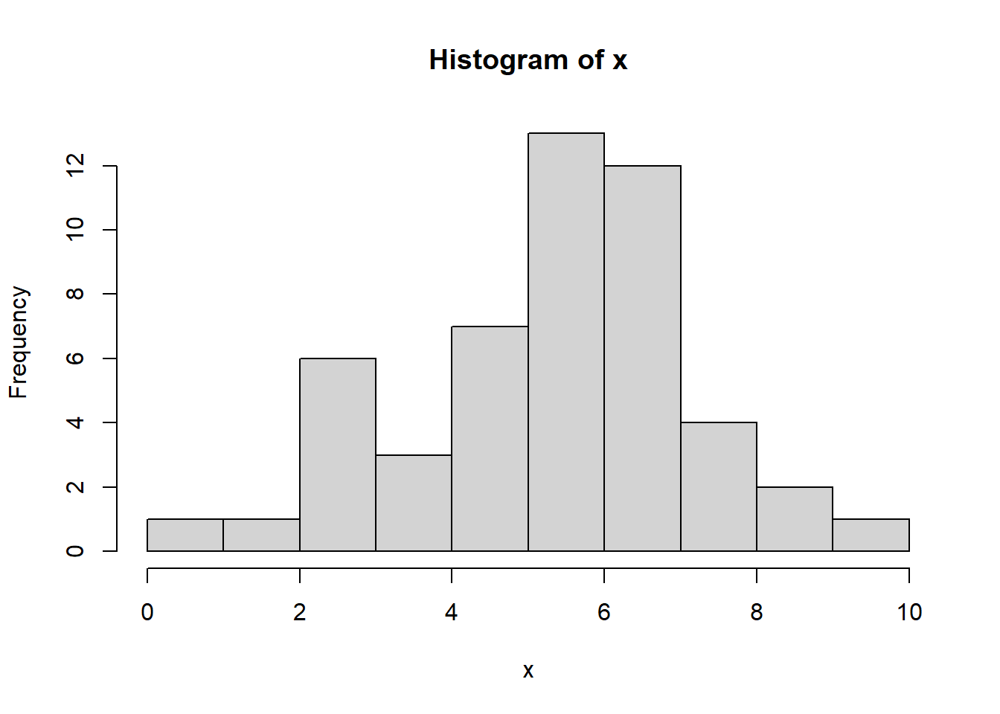
You can also do this using ggplot rather than base R graphics.
x_df <- tibble(x_col = x)
ggplot(data = x_df, mapping = aes(x = x_col)) +
geom_histogram()## `stat_bin()` using `bins = 30`. Pick better value with `binwidth`.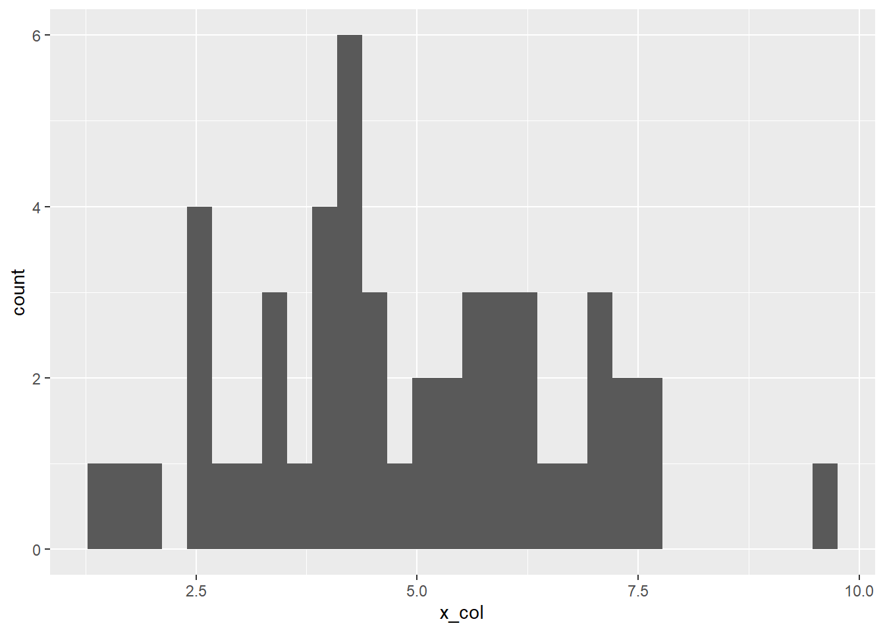
The histogram is a very standard plot, and you should consider it a go-to option in your toolkit. Alternatively, you can use geom_density() instead of geom_histogram() to get a smooth graph rather than one with discrete bins. We will use the same data that we generated before.
We will write this two ways to demnostrate how the pipe %>% operator works.
First way:
ggplot(data = x_df, mapping = aes(x = x_col)) +
geom_density()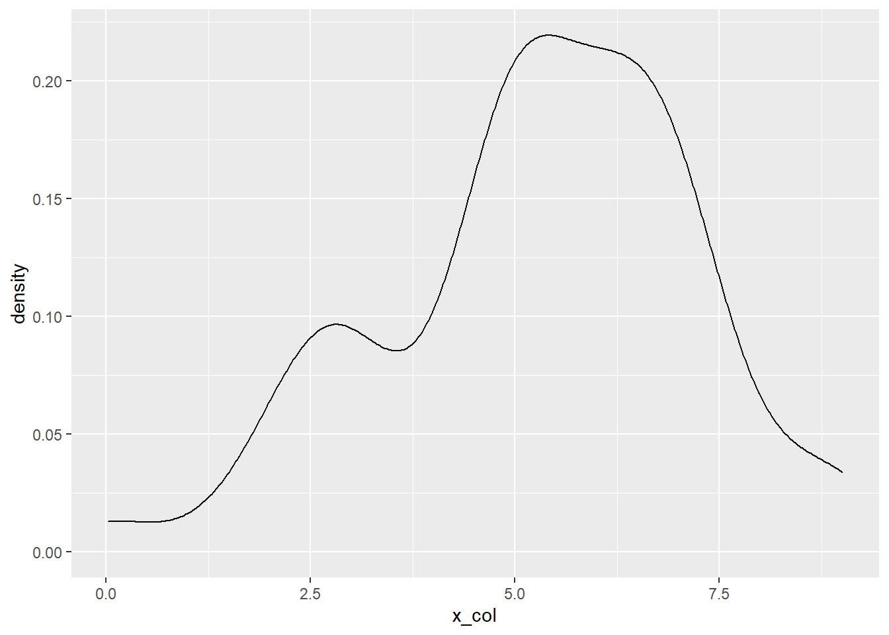
Second way:
x_df %>%
ggplot(mapping = aes(x = x_col)) +
geom_density()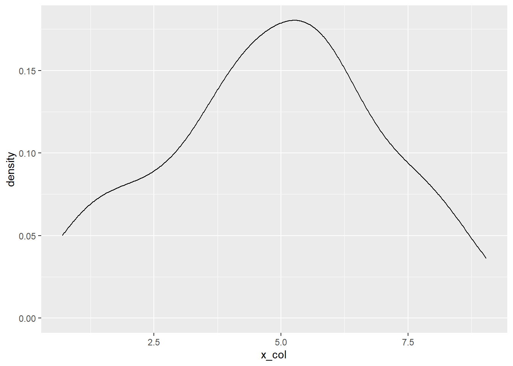
Just for fun, look at what happens to the the plot if you increase the sample size
First, we will generate the data with a sample size of 5,000 rather than 50.
num <- 5000
mu <- 5
stdev <- 2
x <- rnorm(n = num, mean = mu, sd = stdev)
x_df <- tibble(x_col = x)Then we will plot the histogram
x_df %>%
ggplot(aes(x = x_col)) +
geom_histogram() +
labs(x = "x value",
y = "Count",
title = "Histogram of normal distribution with n = 5000, mu = 5, sd = 2")## `stat_bin()` using `bins = 30`. Pick better value with `binwidth`.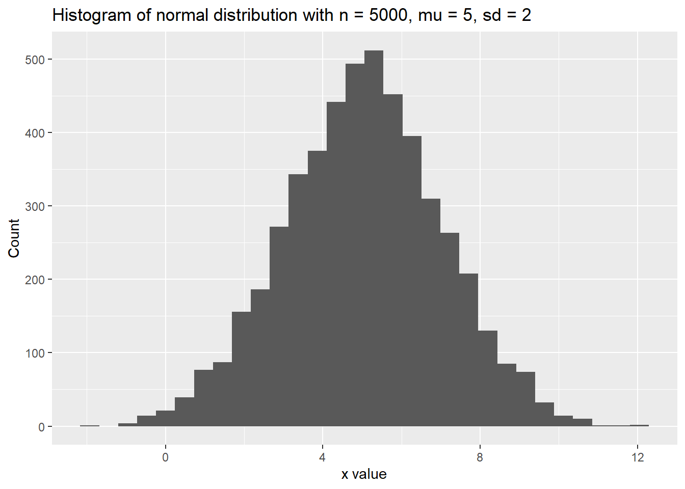
And, finally, we can make the density plot instead of the histogram, if that’s our jam.
ggplot(data = x_df, mapping = aes(x = x_col)) +
geom_density()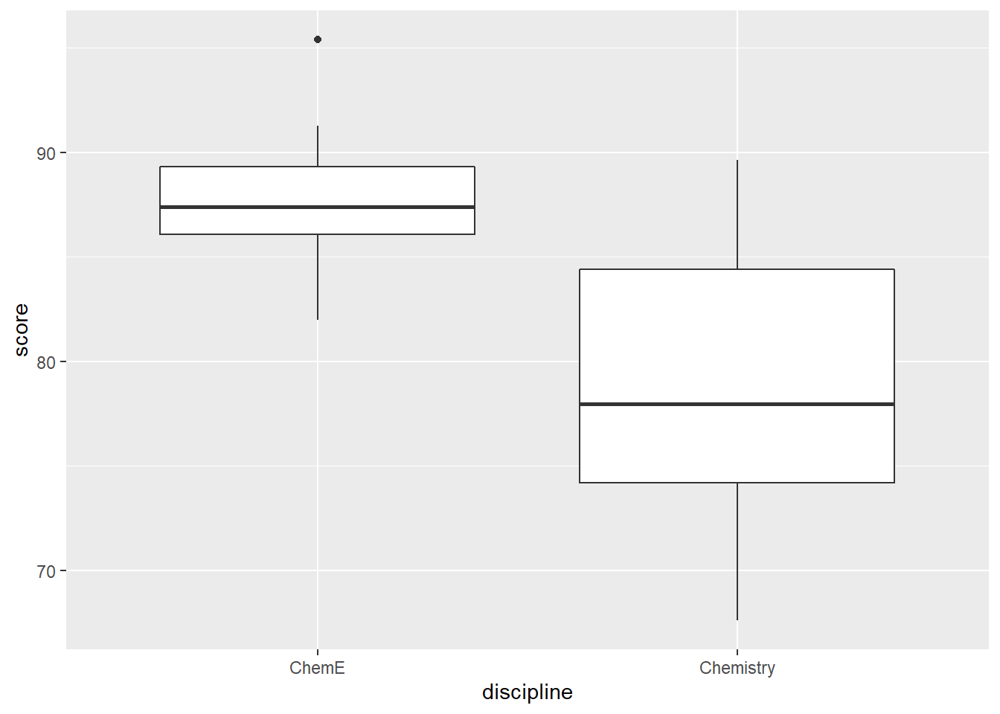
3.1.2 One Discrete Variable (either predictor or outcome)
What if instead of a continuous (i.e., interval or ratio) variable we have a discrete variable such as a nominal (e.g., major, university) or ordinal (e.g., Likert scale item, level of education) variable? For that we can use something like geom_bar() or geom_col() to plot the counts of observations within each of those categories.
To demonstrate this, we first need some data to work with. We will use the pre-semester, prior knowledge survey that everyone took. I have combined this year’s results with last year’s results in order to increase the sample size. After reading in the data, I will also use the clean_names() function from the janitor package.
## load in the data
survey_df <- read_csv("ENGE_5714_2021_pre_survey.csv")## Parsed with column specification:
## cols(
## .default = col_character(),
## student_id = col_double()
## )## See spec(...) for full column specifications.survey_df <- survey_df %>% clean_names()Next, we can go ahead and make a bar plot with the following code:
survey_df %>%
ggplot(aes(x = i_have_taken_a_quantitative_research_methods_course_before)) +
geom_bar()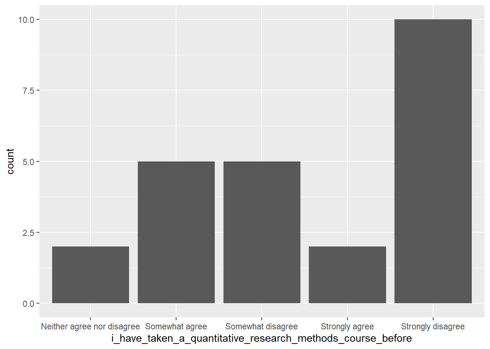
Notice that the ordering is not quite what we would want. It is alphabetical. Let’s try to fix this.
Here is one way: we first specify the levels of that variable (i.e., the different values that it could take) and store that in the variable q_levels. Then, we pass that to the factor() function, which will tell R that we want whichever variable is passed to factor() two things. First, it will say that we want to make that variable a factor variable with levels = .... Second, we set ordered = TRUE to tell R that there is a specific ordering to that variable. This way, whenever there is something like a plot that we make, the ordering will persist in the labeling and R will not show the labels in alphabetical order.
Here is an example of that in action:
q_levels <- c("Strongly disagree", "Somewhat disagree", "Neither agree nor disagree",
"Somewhat agree", "Strongly agree")
survey_df$i_have_taken_a_quantitative_research_methods_course_before <- factor(survey_df$i_have_taken_a_quantitative_research_methods_course_before,
levels = q_levels,
ordered = TRUE)Now try plotting these data. We will also add in a coord_flip() to plot the categories along the y-axis. This is a common move to avoid text from the different levels overlapping with each other. Finally, we will also change the x, y, and title labels with labs().
survey_df %>%
ggplot(aes(x = i_have_taken_a_quantitative_research_methods_course_before)) +
geom_bar() +
coord_flip() +
labs(x = "I have taken a quantitative research methods course before",
y = "Count",
title = "Reordered Example")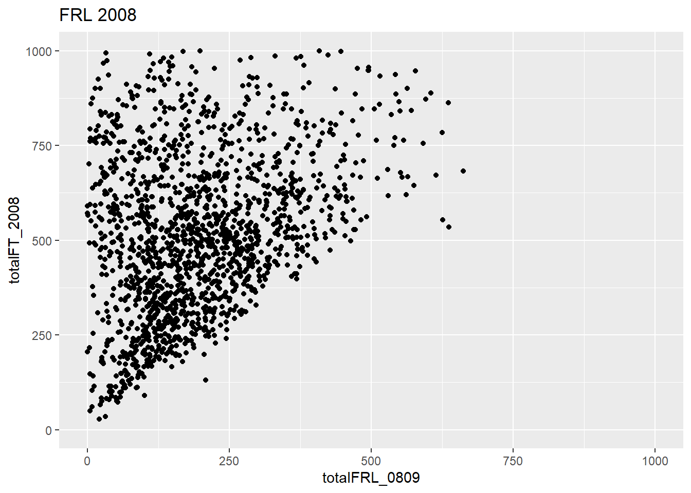
3.2 Joining two datasets
Let’s imagine that we have a separate dataset that has information about the students who completed the pre-course prior knowledge survey.
First, we will load in that dataset
survey_info_df <- read_csv("survey_student_info.csv")## Parsed with column specification:
## cols(
## student_id = col_double(),
## standing = col_character(),
## college = col_character(),
## required = col_character()
## )Next, let’s join the two datasets based on the student id column, which is in each of the two dataframes.
survey_df <- survey_df %>% inner_join(survey_info_df, by = "student_id")Now we should have both datasets joined into one and saved as survey_df.
With this, we can make some nicer plots and do something like use facet_grid() to look at students who are masters and doctoral students, for example.
survey_df %>%
ggplot(aes(x = i_have_taken_a_quantitative_research_methods_course_before)) +
geom_bar() +
facet_grid(standing ~.) +
labs(x = "I have taken a quantitative research methods course before",
y = "Count",
title = "Reordered Example")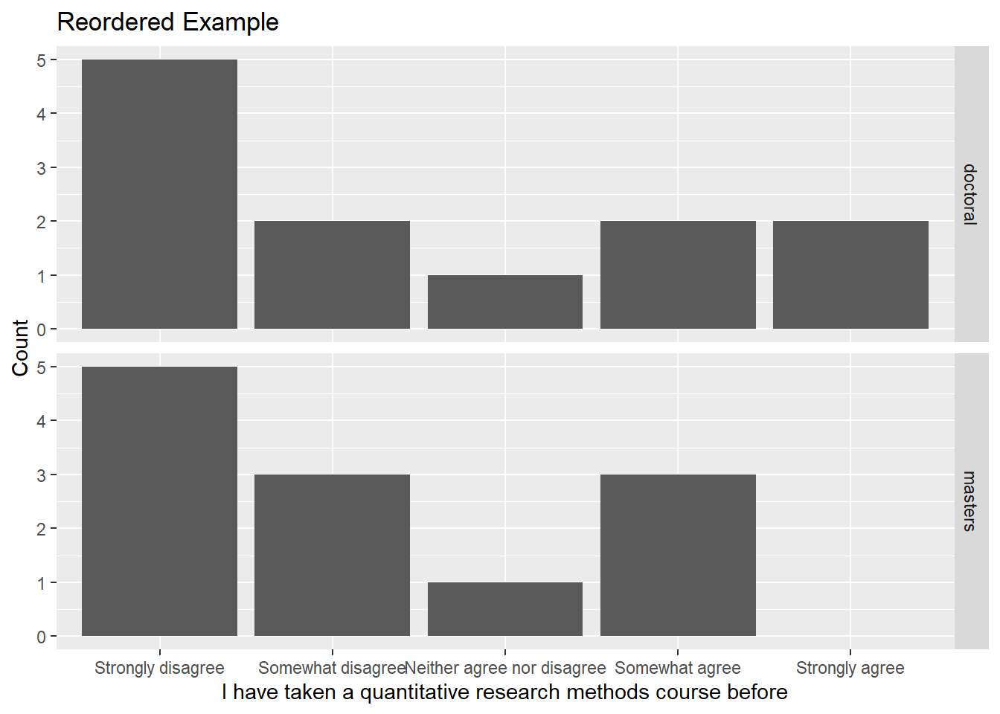
The x axis looks a little crowded. What if we try coord_flip()?
survey_df %>%
filter(standing == "doctoral") %>%
ggplot(aes(x = i_have_taken_a_quantitative_research_methods_course_before)) +
geom_bar() +
coord_flip() +
facet_grid(standing ~.) +
labs(x = "I have taken a quantitative research methods course before",
y = "Count",
title = "Reordered Example")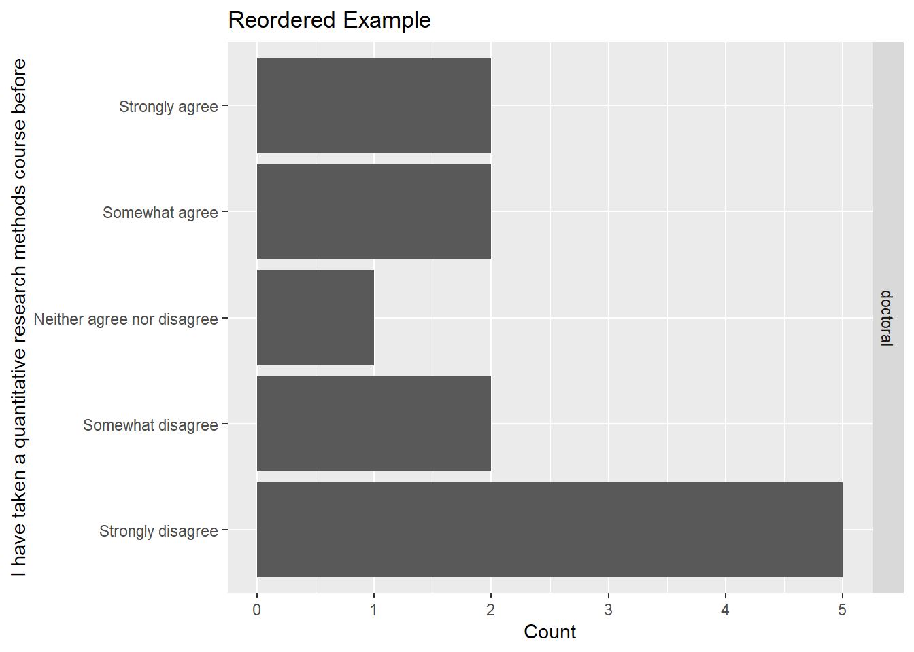
That looks much better.
A quick note on filters
If you want to look at only a subset of your data, you will want to use the filter() function. The general idea is that you can look at observations (rows) that match a certain criteria. For example, you may want to only look at students from a certain region or year or major. In our case, with the prior knowledge survey, let’s say we only want to look at student who have to take the course (i.e., there is a “yes” for them for the required variable). We can do that with the first line. The second line just stores the result as a new dataframe called filtered_df.
survey_df %>% filter(required == "yes")## # A tibble: 12 x 52
## student_id i_have_taken_a_~ i_am_interested~ i_know_what_a_t~
## <dbl> <ord> <chr> <chr>
## 1 1 Somewhat disagr~ Somewhat agree Strongly disagr~
## 2 2 Strongly disagr~ Neither agree n~ Somewhat agree
## 3 4 Somewhat disagr~ Strongly agree Strongly disagr~
## 4 8 Somewhat agree Somewhat agree Somewhat agree
## 5 9 Strongly disagr~ Strongly agree Somewhat agree
## 6 11 Strongly disagr~ Strongly agree Strongly disagr~
## 7 16 Strongly agree Strongly agree Somewhat agree
## 8 17 Strongly disagr~ Strongly agree Strongly disagr~
## 9 18 Somewhat disagr~ Somewhat agree Somewhat disagr~
## 10 20 Strongly disagr~ Neither agree n~ Neither agree n~
## 11 22 Strongly disagr~ Strongly agree Strongly disagr~
## 12 23 Somewhat agree Strongly agree Somewhat agree
## # ... with 48 more variables: i_know_what_a_type_ii_error_is <chr>,
## # i_know_what_a_statistical_confidence_level_is <chr>,
## # i_know_what_a_p_value_is <chr>, i_know_what_p_hacking_means <chr>,
## # i_know_what_statistical_power_means <chr>,
## # i_have_heard_of_frequentist_statistics_before <chr>,
## # i_have_heard_of_bayesian_statistics_before <chr>,
## # i_have_heard_the_term_parametric_statistics_before <chr>,
## # i_have_heard_the_term_non_parametric_statistics_before <chr>,
## # i_know_what_a_histogram_is <chr>,
## # i_know_what_a_probability_distribution_is <chr>,
## # i_know_what_a_random_variable_is <chr>,
## # i_know_what_a_probability_distribution_function_is <chr>,
## # i_know_what_a_cumulative_distribution_function_is <chr>,
## # i_know_what_the_expectation_of_a_random_variable_is <chr>,
## # i_know_how_to_calculate_the_variance_of_a_random_variable <chr>,
## # i_know_what_a_z_score_is <chr>,
## # i_know_how_to_calculate_the_correlation_between_two_variables <chr>,
## # i_know_how_to_interpret_the_correlation_coefficient_between_two_variables <chr>,
## # i_have_heard_of_linear_regression <chr>,
## # i_know_how_to_run_a_linear_regression_in_some_software_or_by_hand_if_im_feeling_wild <chr>,
## # i_know_how_to_interpret_a_linear_regression <chr>,
## # i_have_heard_of_multiple_regression <chr>,
## # i_know_how_to_perform_a_multiple_regression <chr>,
## # i_know_how_to_interpret_a_multiple_regression <chr>,
## # i_have_heard_of_logistic_regression <chr>,
## # i_understand_when_to_use_a_logistic_regression <chr>,
## # i_know_how_to_interpret_the_results_of_a_logistic_regression <chr>,
## # i_have_heard_of_t_tests <chr>, i_have_performed_a_t_test_before <chr>,
## # i_know_how_to_interpret_the_results_of_a_t_test <chr>,
## # i_have_heard_of_analysis_of_variance <chr>,
## # i_understand_when_to_run_an_analysis_of_variance_anova <chr>,
## # i_know_how_to_interpret_the_results_from_an_anova <chr>,
## # i_have_heard_of_a_chi_square_test <chr>,
## # i_have_used_a_chi_square_test_before <chr>,
## # i_know_how_to_interpret_the_results_of_a_chi_square_test <chr>,
## # i_have_heard_of_cluster_analysis_before <chr>,
## # i_have_used_cluster_analysis_before <chr>,
## # i_know_how_to_interpret_the_results_of_a_cluster_analysis <chr>,
## # i_have_heard_of_factor_analysis_either_exploratory_or_confirmatory <chr>,
## # i_have_used_factor_analysis_either_exploratory_or_confirmatory <chr>,
## # i_know_how_to_interpret_the_results_of_a_factor_analysis_either_exploratory_or_confirmatory <chr>,
## # i_already_have_r_and_rstudio_downloaded_to_my_computer <chr>,
## # i_have_used_r_before <chr>, standing <chr>, college <chr>, required <chr>filtered_df <- survey_df %>% filter(required == "yes")A little more about plotting
We are going to shift gears again and look at a few different kinds of plots. The main thing to remember here is that you want to think about whether the variables you have are nominal, ordinal, or continuous (that includes interval and ratio).
3.3 Discrete Predictor, Continuous Outcome
So far we have looked at plots for one variable, but of course we want to have ways to plot multiple variables simultaneously. We will start with the scneario where where we want to plot a continuous variable against a discrete variable. This can arise when you want to plot something like an assessment score and you think it may differ across groups in some way (maybe you intentionally introduced a difference by exposing the two groups to different interventions, for example).
In these scenarios, a boxplot is a very standard way to go.
To demonstrate this, we will simulate a situation in which we want to look at differences on an assessment. We are specificially interested in differences between chemistry and chemical engineering students. Let’s go ahead and create the data by creating two groups of 20 students each. The chemical engineering students will have scores generated from a normal distribution with \(\mu = 85\) and \(\sigma = 4\) (i.e., a mean of 85 and a standard deviation of 4). We will say the chemistry students have scores from a normal distribution with \(\mu = 78\) anad \(\sigma = 6\). This about what these distributions might look like in your head.
group_size <- 20
chem_e_scores <- rnorm(n = group_size, mean = 85, sd = 4)
chem_scores <- rnorm(n = group_size, mean = 78, sd = 6)
data_df <- tibble(
discipline = rep(c("ChemE", "Chemistry"), each = group_size),
score = c(chem_e_scores, chem_scores)
)With these data, we can then create a boxplot using geom_boxplot()
data_df %>%
ggplot(aes(x = discipline, y = score)) +
geom_boxplot()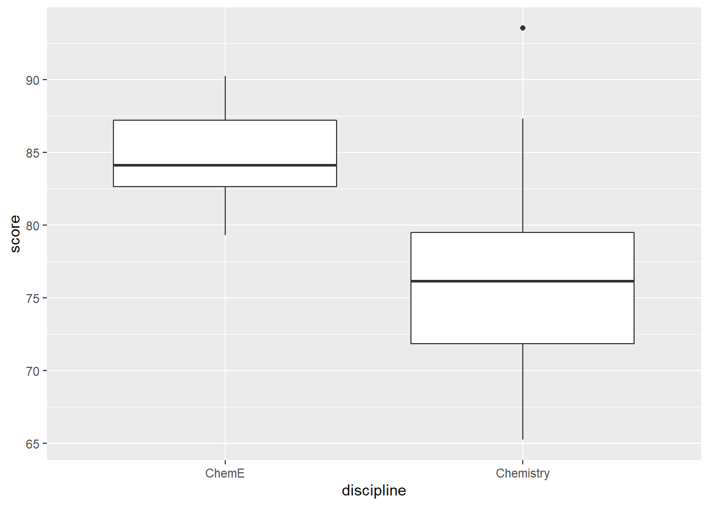
You can make a few modifications to possibly make this plot easier to read.
The first is to put the discrete category on the y axis instead of the x axis.
The second is to use geom_jitter() in addition to geom_boxplot() to show the individual points in each group.
data_df %>%
ggplot(aes(y = score, x = discipline)) +
geom_boxplot() +
geom_jitter()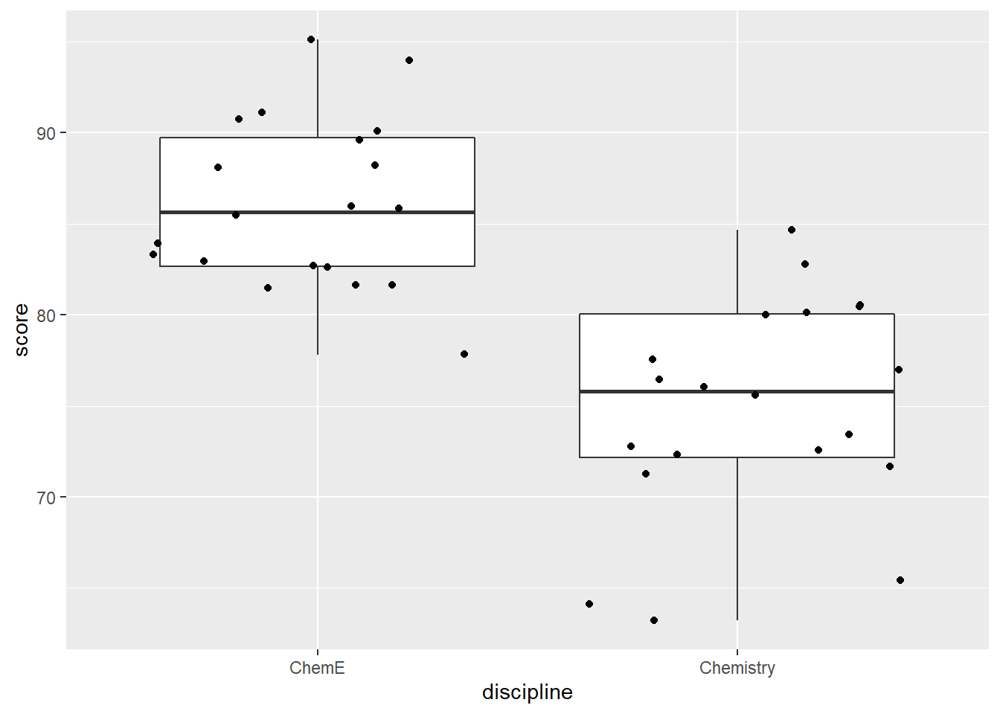
3.4 Continuous predictor and continuous outcome
First, let’s re-do a lot of the steps in this week’s script for reading in data and transforming it a little
mydata <- read_csv("Free Reduced Lunch by Schools and Grade Structures 2008-2017_final.csv")## Parsed with column specification:
## cols(
## .default = col_character(),
## div_num = col_double()
## )## See spec(...) for full column specifications.Check the structure of the data (this output is a bit long).
str(mydata)## tibble [2,101 x 137] (S3: spec_tbl_df/tbl_df/tbl/data.frame)
## $ sch_id : chr [1:2101] "001-0070" "001-0080" "001-0530" "001-0540" ...
## $ div_num : num [1:2101] 1 1 1 1 1 1 1 1 1 1 ...
## $ div_name : chr [1:2101] "Accomack County" "Accomack County" "Accomack County" "Accomack County" ...
## $ school_num : chr [1:2101] "0070<U+00A0>" "0080<U+00A0>" "0530<U+00A0>" "0540<U+00A0>" ...
## $ school_name : chr [1:2101] "NANDUA HIGH" "CHINCOTEAGUE ELEM" "TANGIER COMBINED" "ARCADIA HIGH" ...
## $ school_name2 : chr [1:2101] NA NA NA NA ...
## $ type0809 : chr [1:2101] "SCH-HIGH" "SCH-ELEM" "SCH-COMB" "SCH-HIGH" ...
## $ lowgrade_2008 : chr [1:2101] "9" "PK" "KG" "9" ...
## $ higrade_2008 : chr [1:2101] "12" "5" "12" "12" ...
## $ totalFT_2008 : chr [1:2101] "731" "263" "80" "638" ...
## $ total_2008 : chr [1:2101] "731" "263" "80" "638" ...
## $ snp_0809 : chr [1:2101] "659" "257" "80" "622" ...
## $ free_elig_0809: chr [1:2101] "306" "95" "38" "289" ...
## $ free_per_0809 : chr [1:2101] "46.43%" "36.96%" "47.50%" "46.46%" ...
## $ red_elig_0809 : chr [1:2101] "64" "8" "0" "56" ...
## $ red_per_0809 : chr [1:2101] "9.71%" "3.11%" "0.00%" "9.00%" ...
## $ totalFRL_0809 : chr [1:2101] "370" "103" "38" "345" ...
## $ totalper_0809 : chr [1:2101] "56.15%" "40.08%" "47.50%" "55.47%" ...
## $ type0910 : chr [1:2101] "SCH-HIGH" "SCH-ELEM" "SCH-COMB" "SCH-HIGH" ...
## $ lowgrade_2009 : chr [1:2101] "9" "PK" "KG" "9" ...
## $ higrade_2009 : chr [1:2101] "12" "5" "12" "12" ...
## $ totalFT_2009 : chr [1:2101] "654" "266" "78" "634" ...
## $ total_2009 : chr [1:2101] "654" "266" "78" "634" ...
## $ snp_0910 : chr [1:2101] "655" "266" "78" "635" ...
## $ free_elig_0910: chr [1:2101] "290" "99" "36" "286" ...
## $ free_per_0910 : chr [1:2101] "44.27%" "37.22%" "46.15%" "45.04%" ...
## $ red_elig_0910 : chr [1:2101] "37" "14" "0" "66" ...
## $ red_per_0910 : chr [1:2101] "5.65%" "5.26%" "0.00%" "10.39%" ...
## $ totalFRL_09010: chr [1:2101] "327" "113" "36" "352" ...
## $ totalper_0910 : chr [1:2101] "49.92%" "42.48%" "46.15%" "55.43%" ...
## $ type1011 : chr [1:2101] "SCH-HIGH" "SCH-ELEM" "SCH-COMB" "SCH-HIGH" ...
## $ lowgrade_2010 : chr [1:2101] "9" "PK" "KG" "9" ...
## $ higrade_2010 : chr [1:2101] "12" "5" "12" "12" ...
## $ totalFT_2010 : chr [1:2101] "603" "268" "74" "614" ...
## $ total_2010 : chr [1:2101] "603" "268" "74" "614" ...
## $ snp_1011 : chr [1:2101] "603" "277" "74" "606" ...
## $ free_elig_1011: chr [1:2101] "285" "108" "32" "308" ...
## $ free_per_1011 : chr [1:2101] "47.26%" "38.99%" "43.24%" "50.83%" ...
## $ red_elig_1011 : chr [1:2101] "46" "8" "0" "50" ...
## $ red_per_1011 : chr [1:2101] "7.63%" "2.89%" "0.00%" "8.25%" ...
## $ totalFRL_1011 : chr [1:2101] "331" "116" "32" "358" ...
## $ totalper_1011 : chr [1:2101] "54.89%" "41.88%" "43.24%" "59.08%" ...
## $ type1112 : chr [1:2101] "SCH-HIGH" "SCH-ELEM" "SCH-COMB" "SCH-HIGH" ...
## $ lowgrade_2011 : chr [1:2101] "9" "PK" "KG" "9" ...
## $ higrade_2011 : chr [1:2101] "12" "5" "12" "12" ...
## $ totalFT_2011 : chr [1:2101] "593" "276" "73" "605" ...
## $ total_2011 : chr [1:2101] "593" "276" "73" "605" ...
## $ snp_1112 : chr [1:2101] "593" "281" "73" "611" ...
## $ free_elig_1112: chr [1:2101] "289" "116" "31" "318" ...
## $ free_per_1112 : chr [1:2101] "48.74%" "41.28%" "42.47%" "52.05%" ...
## $ red_elig_1112 : chr [1:2101] "50" "14" "0" "44" ...
## $ red_per_1112 : chr [1:2101] "8.43%" "4.98%" "0.00%" "7.20%" ...
## $ totalFRL_1112 : chr [1:2101] "339" "130" "31" "362" ...
## $ totalper_1112 : chr [1:2101] "57.17%" "46.26%" "42.47%" "59.25%" ...
## $ type1213 : chr [1:2101] "SCH-HIGH" "SCH-ELEM" "SCH-COMB" "SCH-HIGH" ...
## $ lowgrade_2012 : chr [1:2101] "9" "PK" "KG" "9" ...
## $ higrade_2012 : chr [1:2101] "12" "5" "12" "12" ...
## $ totalFT_2012 : chr [1:2101] "637" "258" "68" "579" ...
## $ total_2012 : chr [1:2101] "637" "258" "68" "579" ...
## $ snp_1213 : chr [1:2101] "633" "259" "68" "579" ...
## $ free_elig_1213: chr [1:2101] "324" "117" "21" "348" ...
## $ free_per_1213 : chr [1:2101] "51.18%" "45.17%" "30.88%" "60.10%" ...
## $ red_elig_1213 : chr [1:2101] "42" "20" "5" "33" ...
## $ red_per_1213 : chr [1:2101] "6.64%" "7.72%" "7.35%" "5.70%" ...
## $ totalFRL_1213 : chr [1:2101] "366" "137" "26" "381" ...
## $ totalper_1213 : chr [1:2101] "57.82%" "52.90%" "38.24%" "65.80%" ...
## $ type1314 : chr [1:2101] "SCH-HIGH" "SCH-ELEM" "SCH-COMB" "SCH-HIGH" ...
## $ lowgrade_2013 : chr [1:2101] "9" "PK" "KG" "9" ...
## $ higrade_2013 : chr [1:2101] "12" "5" "12" "12" ...
## $ totalFT_2013 : chr [1:2101] "670" "238" "66" "582" ...
## $ total_2013 : chr [1:2101] "670" "238" "66" "582" ...
## $ snp_1314 : chr [1:2101] "668" "239" "56" "589" ...
## $ free_elig_1314: chr [1:2101] "346" "102" "12" "347" ...
## $ free_per_1314 : chr [1:2101] "51.80%" "42.68%" "21.43%" "58.91%" ...
## $ red_elig_1314 : chr [1:2101] "44" "19" "4" "54" ...
## $ red_per_1314 : chr [1:2101] "6.59%" "7.95%" "7.14%" "9.17%" ...
## $ totalFRL_1314 : chr [1:2101] "390" "121" "16" "401" ...
## $ totalper_1314 : chr [1:2101] "58.38%" "50.63%" "28.57%" "68.08%" ...
## $ type1415 : chr [1:2101] NA NA NA NA ...
## $ lowgrade_2014 : chr [1:2101] "9" "PK" "KG" "9" ...
## $ higrade_2014 : chr [1:2101] "12" "5" "12" "12" ...
## $ totalFT_2014 : chr [1:2101] "685" "251" "65" "581" ...
## $ total_2014 : chr [1:2101] "685" "251" "65" "581" ...
## $ snp_1415 : chr [1:2101] "672" "239" "61" "586" ...
## $ free_elig_1415: chr [1:2101] "361" "93" "14" "351" ...
## $ free_per_1415 : chr [1:2101] "53.72%" "38.91%" "22.95%" "59.90%" ...
## $ red_elig_1415 : chr [1:2101] "40" "17" "4" "40" ...
## $ red_per_1415 : chr [1:2101] "5.95%" "7.11%" "6.56%" "6.83%" ...
## $ totalFRL_1415 : chr [1:2101] "401" "110" "18" "391" ...
## $ totalper_1415 : chr [1:2101] "59.67%" "46.03%" "29.51%" "66.72%" ...
## $ CEP_1516 : chr [1:2101] "#NULL!" "#NULL!" "#NULL!" "#NULL!" ...
## $ type1516 : chr [1:2101] "SCH-HIGH" "SCH-ELEM" "SCH-COMB" "SCH-HIGH" ...
## $ lowgrade_2015 : chr [1:2101] "9" "PK" "KG" "9" ...
## $ higrade_2015 : chr [1:2101] "12" "5" "12" "12" ...
## $ totalFT_2015 : chr [1:2101] "737" "259" "65" "621" ...
## $ total_2015 : chr [1:2101] "737" "259" "65" "621" ...
## $ snp_1516 : chr [1:2101] "728" "268" "67" "608" ...
## $ free_elig_1516: chr [1:2101] "362" "109" "12" "339" ...
## $ free_per_1516 : chr [1:2101] "49.73%" "40.67%" "17.91%" "55.76%" ...
## [list output truncated]
## - attr(*, "spec")=
## .. cols(
## .. sch_id = col_character(),
## .. div_num = col_double(),
## .. div_name = col_character(),
## .. school_num = col_character(),
## .. school_name = col_character(),
## .. school_name2 = col_character(),
## .. type0809 = col_character(),
## .. lowgrade_2008 = col_character(),
## .. higrade_2008 = col_character(),
## .. totalFT_2008 = col_character(),
## .. total_2008 = col_character(),
## .. snp_0809 = col_character(),
## .. free_elig_0809 = col_character(),
## .. free_per_0809 = col_character(),
## .. red_elig_0809 = col_character(),
## .. red_per_0809 = col_character(),
## .. totalFRL_0809 = col_character(),
## .. totalper_0809 = col_character(),
## .. type0910 = col_character(),
## .. lowgrade_2009 = col_character(),
## .. higrade_2009 = col_character(),
## .. totalFT_2009 = col_character(),
## .. total_2009 = col_character(),
## .. snp_0910 = col_character(),
## .. free_elig_0910 = col_character(),
## .. free_per_0910 = col_character(),
## .. red_elig_0910 = col_character(),
## .. red_per_0910 = col_character(),
## .. totalFRL_09010 = col_character(),
## .. totalper_0910 = col_character(),
## .. type1011 = col_character(),
## .. lowgrade_2010 = col_character(),
## .. higrade_2010 = col_character(),
## .. totalFT_2010 = col_character(),
## .. total_2010 = col_character(),
## .. snp_1011 = col_character(),
## .. free_elig_1011 = col_character(),
## .. free_per_1011 = col_character(),
## .. red_elig_1011 = col_character(),
## .. red_per_1011 = col_character(),
## .. totalFRL_1011 = col_character(),
## .. totalper_1011 = col_character(),
## .. type1112 = col_character(),
## .. lowgrade_2011 = col_character(),
## .. higrade_2011 = col_character(),
## .. totalFT_2011 = col_character(),
## .. total_2011 = col_character(),
## .. snp_1112 = col_character(),
## .. free_elig_1112 = col_character(),
## .. free_per_1112 = col_character(),
## .. red_elig_1112 = col_character(),
## .. red_per_1112 = col_character(),
## .. totalFRL_1112 = col_character(),
## .. totalper_1112 = col_character(),
## .. type1213 = col_character(),
## .. lowgrade_2012 = col_character(),
## .. higrade_2012 = col_character(),
## .. totalFT_2012 = col_character(),
## .. total_2012 = col_character(),
## .. snp_1213 = col_character(),
## .. free_elig_1213 = col_character(),
## .. free_per_1213 = col_character(),
## .. red_elig_1213 = col_character(),
## .. red_per_1213 = col_character(),
## .. totalFRL_1213 = col_character(),
## .. totalper_1213 = col_character(),
## .. type1314 = col_character(),
## .. lowgrade_2013 = col_character(),
## .. higrade_2013 = col_character(),
## .. totalFT_2013 = col_character(),
## .. total_2013 = col_character(),
## .. snp_1314 = col_character(),
## .. free_elig_1314 = col_character(),
## .. free_per_1314 = col_character(),
## .. red_elig_1314 = col_character(),
## .. red_per_1314 = col_character(),
## .. totalFRL_1314 = col_character(),
## .. totalper_1314 = col_character(),
## .. type1415 = col_character(),
## .. lowgrade_2014 = col_character(),
## .. higrade_2014 = col_character(),
## .. totalFT_2014 = col_character(),
## .. total_2014 = col_character(),
## .. snp_1415 = col_character(),
## .. free_elig_1415 = col_character(),
## .. free_per_1415 = col_character(),
## .. red_elig_1415 = col_character(),
## .. red_per_1415 = col_character(),
## .. totalFRL_1415 = col_character(),
## .. totalper_1415 = col_character(),
## .. CEP_1516 = col_character(),
## .. type1516 = col_character(),
## .. lowgrade_2015 = col_character(),
## .. higrade_2015 = col_character(),
## .. totalFT_2015 = col_character(),
## .. total_2015 = col_character(),
## .. snp_1516 = col_character(),
## .. free_elig_1516 = col_character(),
## .. free_per_1516 = col_character(),
## .. red_elig_1516 = col_character(),
## .. red_Per_1516 = col_character(),
## .. totalFRL_1516 = col_character(),
## .. totalper_1516 = col_character(),
## .. CEP_1617 = col_character(),
## .. type1617 = col_character(),
## .. lowgrade_2016 = col_character(),
## .. higrade_2016 = col_character(),
## .. totalFT_2016 = col_character(),
## .. total_2016 = col_character(),
## .. snp_2016 = col_character(),
## .. free_elig_1617 = col_character(),
## .. free_per_1617 = col_character(),
## .. red_elig_1617 = col_character(),
## .. red_per_1617 = col_character(),
## .. totalFRL_1617 = col_character(),
## .. totalper_1617 = col_character(),
## .. CEP_1718 = col_character(),
## .. type1718 = col_character(),
## .. lowgrade_2017 = col_character(),
## .. higrade_2017 = col_character(),
## .. totalFT_2017 = col_character(),
## .. total_2017 = col_character(),
## .. snp_1718 = col_character(),
## .. free_elig_1718 = col_character(),
## .. free_per_1718 = col_character(),
## .. red_elig_1718 = col_character(),
## .. red_per_1718 = col_character(),
## .. totalFRL_1718 = col_character(),
## .. totalper_1718 = col_character(),
## .. stable = col_character(),
## .. new = col_character(),
## .. closed = col_character(),
## .. close_yr = col_character(),
## .. reuseid = col_character(),
## .. gradechg = col_character(),
## .. gradechg_yr = col_character(),
## .. grchgyr_2 = col_character()
## .. )Or just check the structure of one specific variable.
str(mydata$total_2017)## chr [1:2101] "742" "236" "60" "624" "286" "485" "583" "550" "600" "514" ...NOTE: When you have a lot of variables, running this str() function is not a great idea - the output is a little too cumbersome
3.5 Mutating Variables
Note that almost all of the data reads in as a “character” data type which are just strings, This can create issues.
We know that many of the columns are actually storing numbers or “numeric” values as R refers to them. We need to fix this.
Let’s tell R that these columns (at least the two we are going to use) are numeric.
We are going to see two interchangeable ways to do this.
First, we use the $ operator which lets me specify a specific column within my data frame in combination with the as.numeric() function
mydata$total_2017<-as.numeric(mydata$total_2017)
mydata$totalFRL_1718<-as.numeric(mydata$totalFRL_1718)Some columns have a percent symbol, which you will need to remove before coercing to numeric data type
mydata <- mydata %>%
mutate(totalper_0809 = str_remove(totalper_0809, "%"))Then we can change the column from character to numeric
mydata$totalper_0809 <- as.numeric(mydata$totalper_0809)## Warning: NAs introduced by coercionCheck to make sure it converted the column type correctly using str().
str(mydata$totalper_0809)## num [1:2101] 56.1 40.1 47.5 55.5 33.4 ...Second, alternatively, we can do this for a whole set of variables at once. We just need to specify a matching criteria.
newdf <- mydata %>%
mutate_at(vars(starts_with("total")), as.numeric)## Warning in mask$eval_all_mutate(dots[[i]]): NAs introduced by coercion
## Warning in mask$eval_all_mutate(dots[[i]]): NAs introduced by coercion
## Warning in mask$eval_all_mutate(dots[[i]]): NAs introduced by coercion
## Warning in mask$eval_all_mutate(dots[[i]]): NAs introduced by coercion
## Warning in mask$eval_all_mutate(dots[[i]]): NAs introduced by coercion
## Warning in mask$eval_all_mutate(dots[[i]]): NAs introduced by coercion
## Warning in mask$eval_all_mutate(dots[[i]]): NAs introduced by coercion
## Warning in mask$eval_all_mutate(dots[[i]]): NAs introduced by coercion
## Warning in mask$eval_all_mutate(dots[[i]]): NAs introduced by coercion
## Warning in mask$eval_all_mutate(dots[[i]]): NAs introduced by coercion
## Warning in mask$eval_all_mutate(dots[[i]]): NAs introduced by coercion
## Warning in mask$eval_all_mutate(dots[[i]]): NAs introduced by coercion
## Warning in mask$eval_all_mutate(dots[[i]]): NAs introduced by coercion
## Warning in mask$eval_all_mutate(dots[[i]]): NAs introduced by coercion
## Warning in mask$eval_all_mutate(dots[[i]]): NAs introduced by coercion
## Warning in mask$eval_all_mutate(dots[[i]]): NAs introduced by coercion
## Warning in mask$eval_all_mutate(dots[[i]]): NAs introduced by coercion
## Warning in mask$eval_all_mutate(dots[[i]]): NAs introduced by coercion
## Warning in mask$eval_all_mutate(dots[[i]]): NAs introduced by coercion
## Warning in mask$eval_all_mutate(dots[[i]]): NAs introduced by coercion
## Warning in mask$eval_all_mutate(dots[[i]]): NAs introduced by coercion
## Warning in mask$eval_all_mutate(dots[[i]]): NAs introduced by coercion
## Warning in mask$eval_all_mutate(dots[[i]]): NAs introduced by coercion
## Warning in mask$eval_all_mutate(dots[[i]]): NAs introduced by coercion
## Warning in mask$eval_all_mutate(dots[[i]]): NAs introduced by coercion
## Warning in mask$eval_all_mutate(dots[[i]]): NAs introduced by coercion
## Warning in mask$eval_all_mutate(dots[[i]]): NAs introduced by coercion
## Warning in mask$eval_all_mutate(dots[[i]]): NAs introduced by coercion
## Warning in mask$eval_all_mutate(dots[[i]]): NAs introduced by coercion
## Warning in mask$eval_all_mutate(dots[[i]]): NAs introduced by coercion
## Warning in mask$eval_all_mutate(dots[[i]]): NAs introduced by coercion
## Warning in mask$eval_all_mutate(dots[[i]]): NAs introduced by coercion
## Warning in mask$eval_all_mutate(dots[[i]]): NAs introduced by coercion
## Warning in mask$eval_all_mutate(dots[[i]]): NAs introduced by coercion
## Warning in mask$eval_all_mutate(dots[[i]]): NAs introduced by coercion
## Warning in mask$eval_all_mutate(dots[[i]]): NAs introduced by coercion
## Warning in mask$eval_all_mutate(dots[[i]]): NAs introduced by coercionnewdf <- newdf %>%
mutate_at(vars(starts_with("totalFRL")), as.numeric)Check whether the old and new variables are stored differently (old as a character, new as a numeric variable)
str(mydata$total_2008)## chr [1:2101] "731" "263" "80" "638" "333" "536" "610" "490" "585" "450" ...str(newdf$total_2008)## num [1:2101] 731 263 80 638 333 536 610 490 585 450 ...3.6 Filtering and Selecting
A basic operation we do a lot is to filter the data so that we are working with a subset of all that we have.
We can do this with the filter() function, part of the dplyr package (in the tidyverse collection of packages).
Let’s say we want to look at the schools with div_num values less than 50.
newdf %>% filter(div_num < 50)## # A tibble: 800 x 137
## sch_id div_num div_name school_num school_name school_name2 type0809
## <chr> <dbl> <chr> <chr> <chr> <chr> <chr>
## 1 001-0~ 1 Accomac~ "0070\xa0" NANDUA HIGH <NA> SCH-HIGH
## 2 001-0~ 1 Accomac~ "0080\xa0" CHINCOTEAG~ <NA> SCH-ELEM
## 3 001-0~ 1 Accomac~ "0530\xa0" TANGIER CO~ <NA> SCH-COMB
## 4 001-0~ 1 Accomac~ "0540\xa0" ARCADIA HI~ <NA> SCH-HIGH
## 5 001-0~ 1 Accomac~ "0580\xa0" CHINCOTEAG~ <NA> SCH-COMB
## 6 001-0~ 1 Accomac~ "0590\xa0" PUNGOTEAGU~ <NA> SCH-ELEM
## 7 001-0~ 1 Accomac~ "0600\xa0" KEGOTANK E~ <NA> SCH-ELEM
## 8 001-0~ 1 Accomac~ "0701\xa0" ACCAWMACKE~ <NA> SCH-ELEM
## 9 001-0~ 1 Accomac~ "0702\xa0" METOMPKIN ~ <NA> SCH-ELEM
## 10 001-0~ 1 Accomac~ "0703\xa0" NANDUA MID~ <NA> SCH-MID
## # ... with 790 more rows, and 130 more variables: lowgrade_2008 <chr>,
## # higrade_2008 <chr>, totalFT_2008 <dbl>, total_2008 <dbl>, snp_0809 <chr>,
## # free_elig_0809 <chr>, free_per_0809 <chr>, red_elig_0809 <chr>,
## # red_per_0809 <chr>, totalFRL_0809 <dbl>, totalper_0809 <dbl>,
## # type0910 <chr>, lowgrade_2009 <chr>, higrade_2009 <chr>,
## # totalFT_2009 <dbl>, total_2009 <dbl>, snp_0910 <chr>, free_elig_0910 <chr>,
## # free_per_0910 <chr>, red_elig_0910 <chr>, red_per_0910 <chr>,
## # totalFRL_09010 <dbl>, totalper_0910 <dbl>, type1011 <chr>,
## # lowgrade_2010 <chr>, higrade_2010 <chr>, totalFT_2010 <dbl>,
## # total_2010 <dbl>, snp_1011 <chr>, free_elig_1011 <chr>,
## # free_per_1011 <chr>, red_elig_1011 <chr>, red_per_1011 <chr>,
## # totalFRL_1011 <dbl>, totalper_1011 <dbl>, type1112 <chr>,
## # lowgrade_2011 <chr>, higrade_2011 <chr>, totalFT_2011 <dbl>,
## # total_2011 <dbl>, snp_1112 <chr>, free_elig_1112 <chr>,
## # free_per_1112 <chr>, red_elig_1112 <chr>, red_per_1112 <chr>,
## # totalFRL_1112 <dbl>, totalper_1112 <dbl>, type1213 <chr>,
## # lowgrade_2012 <chr>, higrade_2012 <chr>, totalFT_2012 <dbl>,
## # total_2012 <dbl>, snp_1213 <chr>, free_elig_1213 <chr>,
## # free_per_1213 <chr>, red_elig_1213 <chr>, red_per_1213 <chr>,
## # totalFRL_1213 <dbl>, totalper_1213 <dbl>, type1314 <chr>,
## # lowgrade_2013 <chr>, higrade_2013 <chr>, totalFT_2013 <dbl>,
## # total_2013 <dbl>, snp_1314 <chr>, free_elig_1314 <chr>,
## # free_per_1314 <chr>, red_elig_1314 <chr>, red_per_1314 <chr>,
## # totalFRL_1314 <dbl>, totalper_1314 <dbl>, type1415 <chr>,
## # lowgrade_2014 <chr>, higrade_2014 <chr>, totalFT_2014 <dbl>,
## # total_2014 <dbl>, snp_1415 <chr>, free_elig_1415 <chr>,
## # free_per_1415 <chr>, red_elig_1415 <chr>, red_per_1415 <chr>,
## # totalFRL_1415 <dbl>, totalper_1415 <dbl>, CEP_1516 <chr>, type1516 <chr>,
## # lowgrade_2015 <chr>, higrade_2015 <chr>, totalFT_2015 <dbl>,
## # total_2015 <dbl>, snp_1516 <chr>, free_elig_1516 <chr>,
## # free_per_1516 <chr>, red_elig_1516 <chr>, red_Per_1516 <chr>,
## # totalFRL_1516 <dbl>, totalper_1516 <dbl>, CEP_1617 <chr>, type1617 <chr>,
## # lowgrade_2016 <chr>, higrade_2016 <chr>, ...Or, if we want to look at schools where the highest grade in 2008 was grade five, we can try:
newdf %>% filter(higrade_2008 == "5") # this returns a subsetted dataframe with 878 rows## # A tibble: 878 x 137
## sch_id div_num div_name school_num school_name school_name2 type0809
## <chr> <dbl> <chr> <chr> <chr> <chr> <chr>
## 1 001-0~ 1 Accomac~ "0080\xa0" CHINCOTEAG~ <NA> SCH-ELEM
## 2 001-0~ 1 Accomac~ "0590\xa0" PUNGOTEAGU~ <NA> SCH-ELEM
## 3 001-0~ 1 Accomac~ "0600\xa0" KEGOTANK E~ <NA> SCH-ELEM
## 4 001-0~ 1 Accomac~ "0701\xa0" ACCAWMACKE~ <NA> SCH-ELEM
## 5 001-0~ 1 Accomac~ "0702\xa0" METOMPKIN ~ <NA> SCH-ELEM
## 6 002-0~ 2 Albemar~ "0010\xa0" HOLLYMEAD ~ <NA> SCH-ELEM
## 7 002-0~ 2 Albemar~ "0030\xa0" SCOTTSVILL~ <NA> SCH-ELEM
## 8 002-0~ 2 Albemar~ "0040\xa0" MARY CARR ~ <NA> SCH-ELEM
## 9 002-0~ 2 Albemar~ "0100\xa0" BROADUS WO~ <NA> SCH-ELEM
## 10 002-0~ 2 Albemar~ "0150\xa0" PAUL H CAL~ <NA> SCH-ELEM
## # ... with 868 more rows, and 130 more variables: lowgrade_2008 <chr>,
## # higrade_2008 <chr>, totalFT_2008 <dbl>, total_2008 <dbl>, snp_0809 <chr>,
## # free_elig_0809 <chr>, free_per_0809 <chr>, red_elig_0809 <chr>,
## # red_per_0809 <chr>, totalFRL_0809 <dbl>, totalper_0809 <dbl>,
## # type0910 <chr>, lowgrade_2009 <chr>, higrade_2009 <chr>,
## # totalFT_2009 <dbl>, total_2009 <dbl>, snp_0910 <chr>, free_elig_0910 <chr>,
## # free_per_0910 <chr>, red_elig_0910 <chr>, red_per_0910 <chr>,
## # totalFRL_09010 <dbl>, totalper_0910 <dbl>, type1011 <chr>,
## # lowgrade_2010 <chr>, higrade_2010 <chr>, totalFT_2010 <dbl>,
## # total_2010 <dbl>, snp_1011 <chr>, free_elig_1011 <chr>,
## # free_per_1011 <chr>, red_elig_1011 <chr>, red_per_1011 <chr>,
## # totalFRL_1011 <dbl>, totalper_1011 <dbl>, type1112 <chr>,
## # lowgrade_2011 <chr>, higrade_2011 <chr>, totalFT_2011 <dbl>,
## # total_2011 <dbl>, snp_1112 <chr>, free_elig_1112 <chr>,
## # free_per_1112 <chr>, red_elig_1112 <chr>, red_per_1112 <chr>,
## # totalFRL_1112 <dbl>, totalper_1112 <dbl>, type1213 <chr>,
## # lowgrade_2012 <chr>, higrade_2012 <chr>, totalFT_2012 <dbl>,
## # total_2012 <dbl>, snp_1213 <chr>, free_elig_1213 <chr>,
## # free_per_1213 <chr>, red_elig_1213 <chr>, red_per_1213 <chr>,
## # totalFRL_1213 <dbl>, totalper_1213 <dbl>, type1314 <chr>,
## # lowgrade_2013 <chr>, higrade_2013 <chr>, totalFT_2013 <dbl>,
## # total_2013 <dbl>, snp_1314 <chr>, free_elig_1314 <chr>,
## # free_per_1314 <chr>, red_elig_1314 <chr>, red_per_1314 <chr>,
## # totalFRL_1314 <dbl>, totalper_1314 <dbl>, type1415 <chr>,
## # lowgrade_2014 <chr>, higrade_2014 <chr>, totalFT_2014 <dbl>,
## # total_2014 <dbl>, snp_1415 <chr>, free_elig_1415 <chr>,
## # free_per_1415 <chr>, red_elig_1415 <chr>, red_per_1415 <chr>,
## # totalFRL_1415 <dbl>, totalper_1415 <dbl>, CEP_1516 <chr>, type1516 <chr>,
## # lowgrade_2015 <chr>, higrade_2015 <chr>, totalFT_2015 <dbl>,
## # total_2015 <dbl>, snp_1516 <chr>, free_elig_1516 <chr>,
## # free_per_1516 <chr>, red_elig_1516 <chr>, red_Per_1516 <chr>,
## # totalFRL_1516 <dbl>, totalper_1516 <dbl>, CEP_1617 <chr>, type1617 <chr>,
## # lowgrade_2016 <chr>, higrade_2016 <chr>, ...Note that we had to set it equal to the character value “5” rather than the numeric value 5. Why?
If we wanted to filter on numeric values instead, we would want to do something like this:
newdf %>%
mutate(higrade_2008 = as.numeric(higrade_2008)) %>%
filter(higrade_2008 == 5) # again, this returns a subsetted dataframe with 878 rows## Warning in mask$eval_all_mutate(dots[[i]]): NAs introduced by coercion## # A tibble: 878 x 137
## sch_id div_num div_name school_num school_name school_name2 type0809
## <chr> <dbl> <chr> <chr> <chr> <chr> <chr>
## 1 001-0~ 1 Accomac~ "0080\xa0" CHINCOTEAG~ <NA> SCH-ELEM
## 2 001-0~ 1 Accomac~ "0590\xa0" PUNGOTEAGU~ <NA> SCH-ELEM
## 3 001-0~ 1 Accomac~ "0600\xa0" KEGOTANK E~ <NA> SCH-ELEM
## 4 001-0~ 1 Accomac~ "0701\xa0" ACCAWMACKE~ <NA> SCH-ELEM
## 5 001-0~ 1 Accomac~ "0702\xa0" METOMPKIN ~ <NA> SCH-ELEM
## 6 002-0~ 2 Albemar~ "0010\xa0" HOLLYMEAD ~ <NA> SCH-ELEM
## 7 002-0~ 2 Albemar~ "0030\xa0" SCOTTSVILL~ <NA> SCH-ELEM
## 8 002-0~ 2 Albemar~ "0040\xa0" MARY CARR ~ <NA> SCH-ELEM
## 9 002-0~ 2 Albemar~ "0100\xa0" BROADUS WO~ <NA> SCH-ELEM
## 10 002-0~ 2 Albemar~ "0150\xa0" PAUL H CAL~ <NA> SCH-ELEM
## # ... with 868 more rows, and 130 more variables: lowgrade_2008 <chr>,
## # higrade_2008 <dbl>, totalFT_2008 <dbl>, total_2008 <dbl>, snp_0809 <chr>,
## # free_elig_0809 <chr>, free_per_0809 <chr>, red_elig_0809 <chr>,
## # red_per_0809 <chr>, totalFRL_0809 <dbl>, totalper_0809 <dbl>,
## # type0910 <chr>, lowgrade_2009 <chr>, higrade_2009 <chr>,
## # totalFT_2009 <dbl>, total_2009 <dbl>, snp_0910 <chr>, free_elig_0910 <chr>,
## # free_per_0910 <chr>, red_elig_0910 <chr>, red_per_0910 <chr>,
## # totalFRL_09010 <dbl>, totalper_0910 <dbl>, type1011 <chr>,
## # lowgrade_2010 <chr>, higrade_2010 <chr>, totalFT_2010 <dbl>,
## # total_2010 <dbl>, snp_1011 <chr>, free_elig_1011 <chr>,
## # free_per_1011 <chr>, red_elig_1011 <chr>, red_per_1011 <chr>,
## # totalFRL_1011 <dbl>, totalper_1011 <dbl>, type1112 <chr>,
## # lowgrade_2011 <chr>, higrade_2011 <chr>, totalFT_2011 <dbl>,
## # total_2011 <dbl>, snp_1112 <chr>, free_elig_1112 <chr>,
## # free_per_1112 <chr>, red_elig_1112 <chr>, red_per_1112 <chr>,
## # totalFRL_1112 <dbl>, totalper_1112 <dbl>, type1213 <chr>,
## # lowgrade_2012 <chr>, higrade_2012 <chr>, totalFT_2012 <dbl>,
## # total_2012 <dbl>, snp_1213 <chr>, free_elig_1213 <chr>,
## # free_per_1213 <chr>, red_elig_1213 <chr>, red_per_1213 <chr>,
## # totalFRL_1213 <dbl>, totalper_1213 <dbl>, type1314 <chr>,
## # lowgrade_2013 <chr>, higrade_2013 <chr>, totalFT_2013 <dbl>,
## # total_2013 <dbl>, snp_1314 <chr>, free_elig_1314 <chr>,
## # free_per_1314 <chr>, red_elig_1314 <chr>, red_per_1314 <chr>,
## # totalFRL_1314 <dbl>, totalper_1314 <dbl>, type1415 <chr>,
## # lowgrade_2014 <chr>, higrade_2014 <chr>, totalFT_2014 <dbl>,
## # total_2014 <dbl>, snp_1415 <chr>, free_elig_1415 <chr>,
## # free_per_1415 <chr>, red_elig_1415 <chr>, red_per_1415 <chr>,
## # totalFRL_1415 <dbl>, totalper_1415 <dbl>, CEP_1516 <chr>, type1516 <chr>,
## # lowgrade_2015 <chr>, higrade_2015 <chr>, totalFT_2015 <dbl>,
## # total_2015 <dbl>, snp_1516 <chr>, free_elig_1516 <chr>,
## # free_per_1516 <chr>, red_elig_1516 <chr>, red_Per_1516 <chr>,
## # totalFRL_1516 <dbl>, totalper_1516 <dbl>, CEP_1617 <chr>, type1617 <chr>,
## # lowgrade_2016 <chr>, higrade_2016 <chr>, ...3.7 Grouping and Summarizing
Let’s shift gears to a different combination of operations…
Let’s go ahead and try using tidyverse to narrow to what we want. Imagine we want to see the county level aggregate numbers for FRL in the 2017-2018 school year.
We will start out with our entire data frame and then use pipes (the %>% operator) to work from there. The final result will be stored in our new data frame that we are creating, called county_level_aggregate.
First, select will pick columns Next, group_by and summarize work together to get us our aggregate totals.
county_level_aggregate <- newdf %>%
select(div_name, total_2017, totalFRL_1718) %>%
group_by(div_name) %>%
summarize(totalstudents = sum(total_2017),
totalFRL = sum(totalFRL_1718))## `summarise()` ungrouping output (override with `.groups` argument)Now, we can compute percentages if we like and we can specify a new column by referring to. One that doesn’t exist yet but will after we run this code. We will do this two interchangeable ways.
First, the old school way:
county_level_aggregate$percent_FRL <- county_level_aggregate$totalFRL/county_level_aggregate$totalstudents*100Second, the tidyverse way:
county_level_aggregate <- county_level_aggregate %>%
mutate(percent_frl = totalFRL / totalstudents * 100)Just for fun, let’s see how this could have been incorporated into our summarize call
county_level_percents <- newdf %>%
select(div_name, total_2017, totalFRL_1718) %>%
group_by(div_name) %>%
summarize(percentFRL=sum(totalFRL_1718)/sum(total_2017) * 100)## `summarise()` ungrouping output (override with `.groups` argument)Something is going to look weird with this plot
newdf %>%
ggplot(aes(totalFRL_0809, totalFT_2008)) +
geom_point() +
labs(title = "FRL 2008", x = "totalFRL_0809")## Warning: Removed 236 rows containing missing values (geom_point).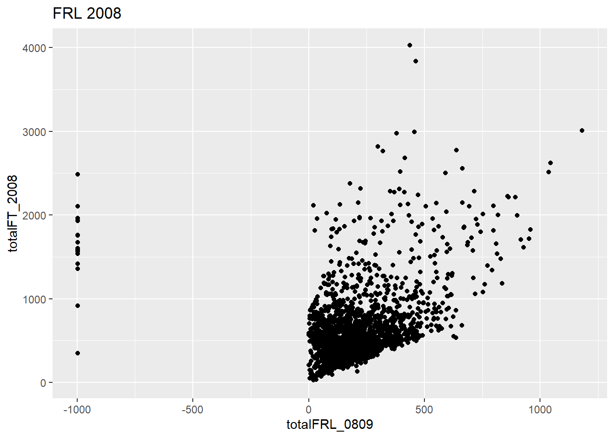
Let’s see if we can fix it
newdf %>%
filter(!is.na(totalFRL_0809)) %>%
ggplot(aes(totalFRL_0809, totalFT_2008)) +
geom_point() +
labs(title = "FRL 2008",
x = "totalFRL_0809") +
xlim(0, 1000) +
ylim(0, 1000)## Warning: Removed 324 rows containing missing values (geom_point).